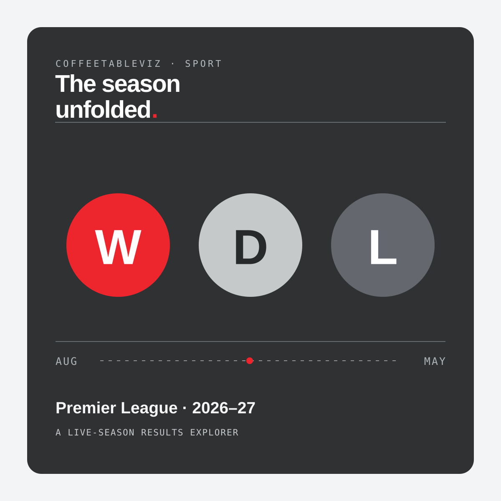
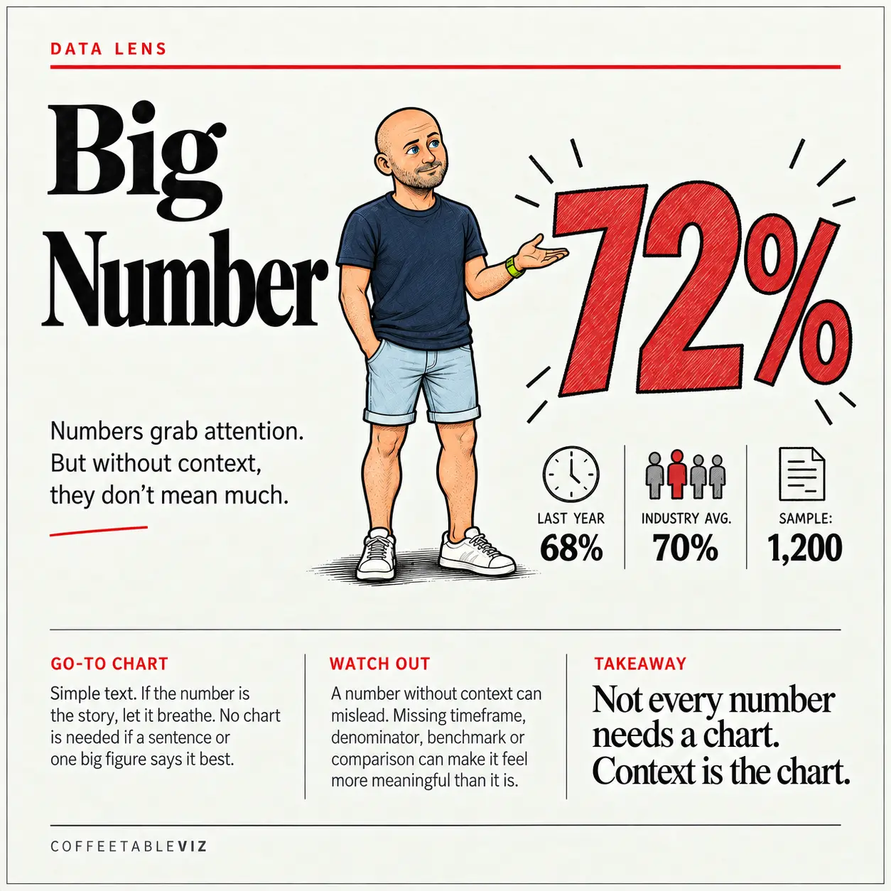
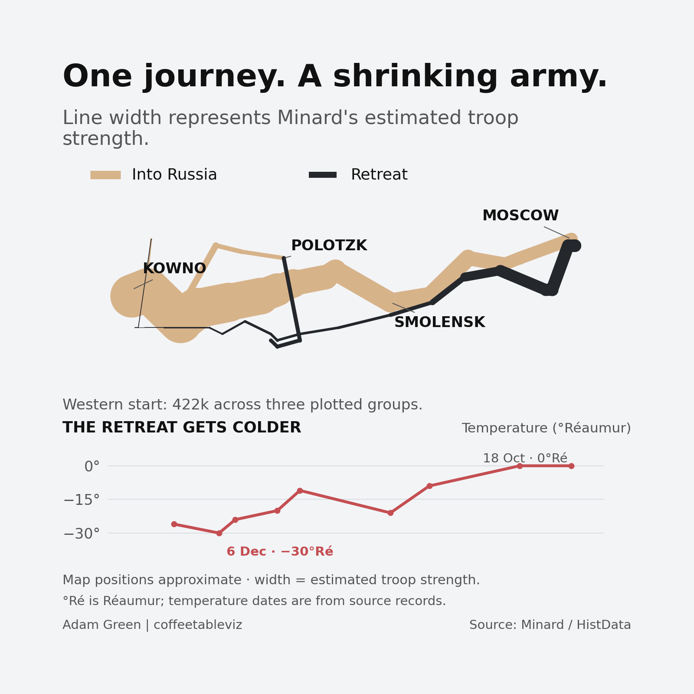
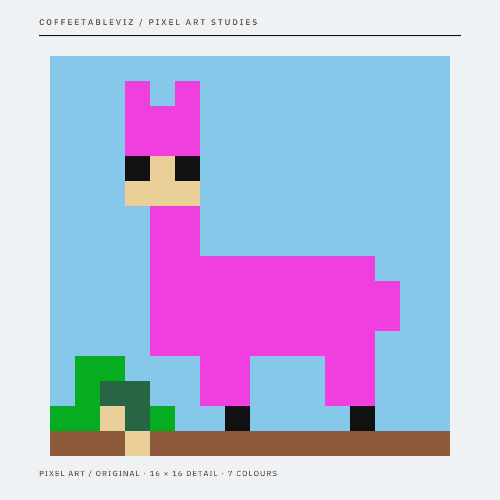
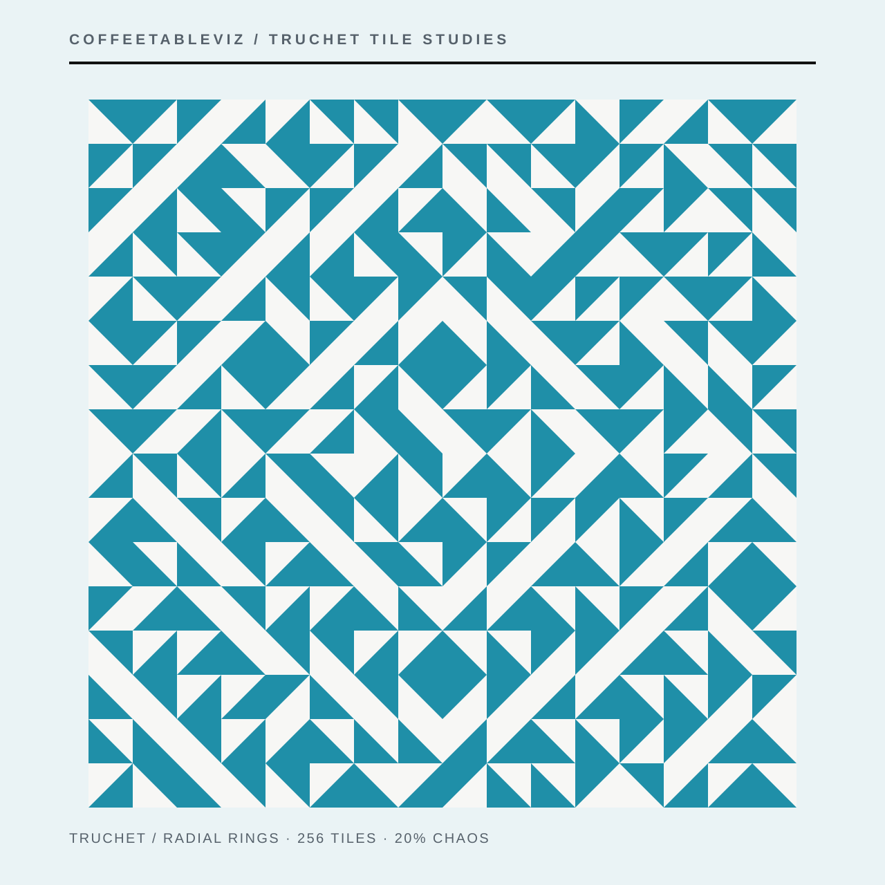
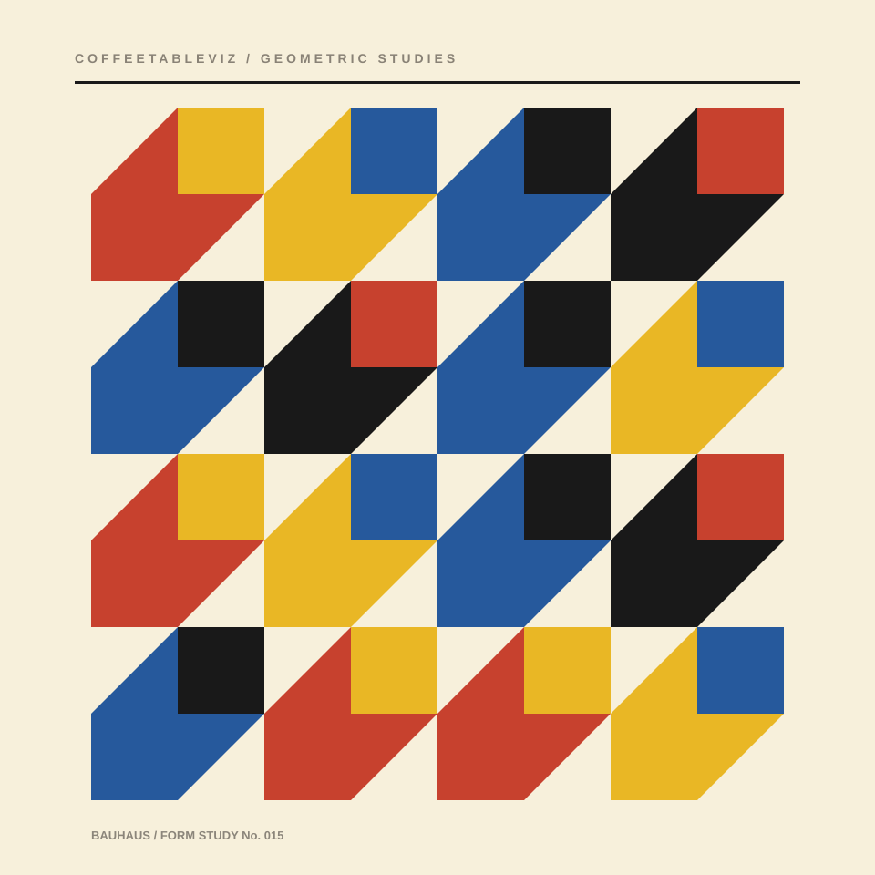
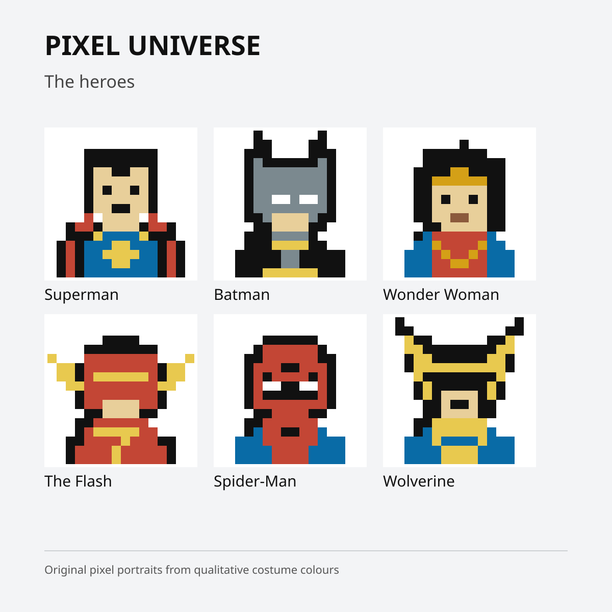
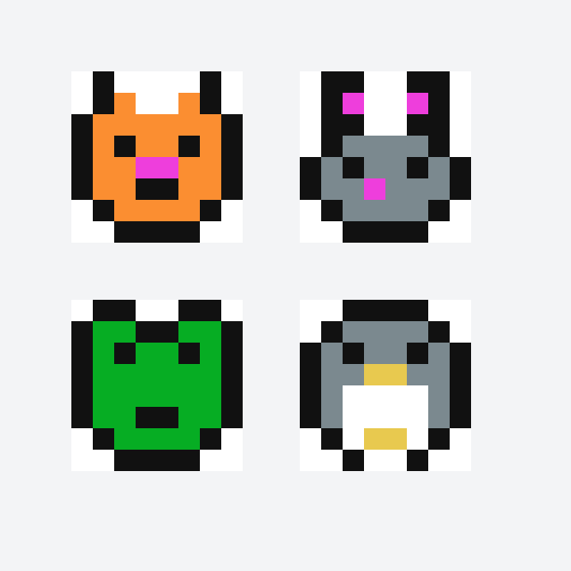

Guides · references · things worth keeping
Resources.
Practical guides for choosing, designing and reading charts — things worth keeping rather than scrolling past.
Guides and collections
Keep and revisitInteractive · Sport · 2026–27
The Premier League is unfolding
Twenty clubs. One season still being written. Explore completed home and away results, compare provisional points, and return as new matches are played.
Explore the current season
13-card guide
Choosing the right chart
Start with the question the chart needs to answer, then choose the form that makes the comparison easiest to see.
Open the guide →
Growing reference collection
Icons of Data
The remarkable ways we turn information into understanding. Maps, numbers, symbols and designs that make the complex a little easier to see — or feel.
Explore the collection →
Interactive · 8×8 or 16×16
Pixel Art Studio
Two canvas sizes. Fifteen paint colours. A rather good way to spend five minutes. Paint, undo, save and share your masterpiece.
Start painting →
Interactive · 8×8 to 32×32
Truchet Tile Studio
One tile, four rotations. Pick a pattern, slide from symmetry towards chaos, then rotate, save and share your own geometric artwork.
Start creating →
Interactive · geometric patterns + local CSV data art
Bauhaus Art Studio
Circles, triangles and glorious primary colours. Paint by hand, upload a CSV or connect public GitHub data to make a geometric poster.
Make something geometric →
Interactive gallery · 12 editable pixel portraits
Pixel Universe
Heroes, villains and just 256 little squares. Explore twelve original colour-inspired character icons, then remix any design in Pixel Art Studio.
Explore Pixel Universe →
Interactive gallery · 28 designs
The Tiny Pixel Zoo
Meet 28 little creatures in 8×8 and 16×16. Tap a design to open it in the Pixel Art Builder and add your own creative mischief.
Meet the creatures →